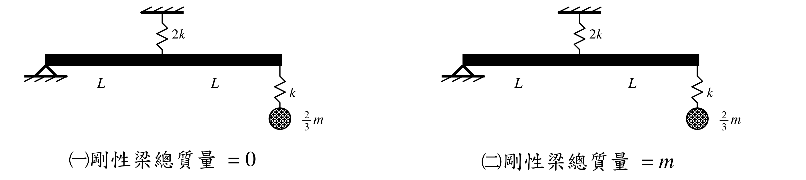
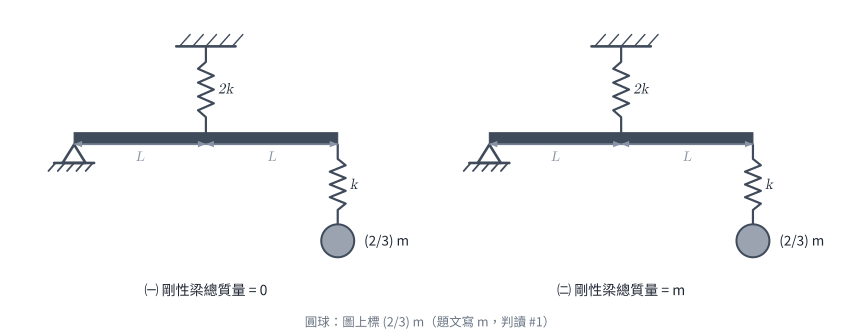
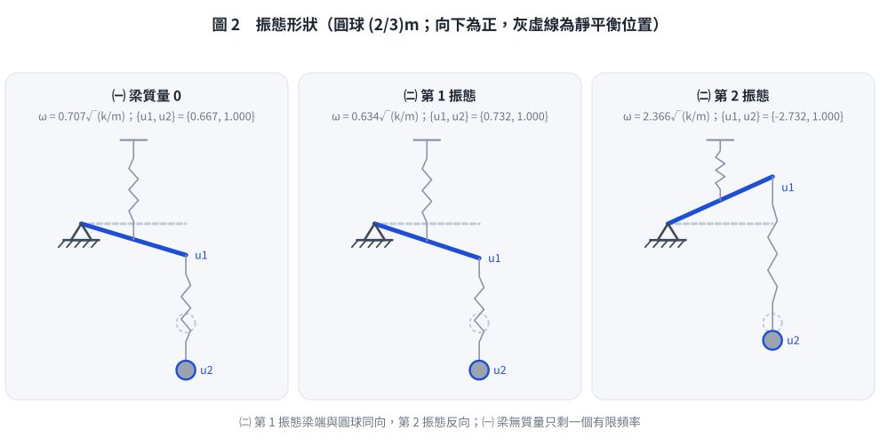

📄 題目正本：考卷原文・附圖・判讀清單（已確認）
SD-2019-1 題目正本
本檔只記錄考卷上寫了什麼、圖上畫了什麼，不含任何解法。解析見同資料夾
SD-2019-1.md。
判讀清單經使用者確認前，狀態為「待確認」；確認後本檔原則上不再修改（改動須回考卷原圖並記 log）。
| 項目 | 內容 |
|---|---|
| 考卷 | raw/exams/SD-2019_結構動力分析與耐震設計.pdf，第 1 頁（頁次 2－1），第一題 |
| 考年 | 2019（民國108年）專技高考結構工程技師「結構動力分析與耐震設計」 |
| 配分 | 25 分（㈠ 10 分、㈡ 15 分） |
| 附圖 | SD-2019-1-fig-1.png（舊擷取，解析度偏低，圓球旁「2/3 m」字小）、SD-2019-1-fig-2.png（2026-11-15 由考卷 500 dpi 重擷取） |
| 判讀狀態 | 已確認（2026-11-15 使用者授權依 Claude 建議確認；影響答案項目定案：#1 圓球質量主解採圖上標示 (2/3)m（兩張圖一致），題文「質量為 m」的結果於解析 §5 對照。原轉錄：2026-11-15 轉錄；PyMuPDF 110 dpi 整頁＋500 dpi 局部放大，PDF 文字層核對原文；盲讀於開啟解析前完成） |
1. 考卷原文（逐字）
一、有一均質剛性梁，其一端為鉸接，另一端為自由端，在自由端以彈簧連接一質量為 $m$ 的圓球。分別考慮以下兩種不同狀況：
㈠剛性梁總質量＝0。（10 分）㈡剛性梁總質量＝$m$。（15 分）
針對每一狀況試回答以下問題：
1.求出運動方程式。
2.求出振動頻率及所對應之振態。
2. 考卷給的公式、附表與參數
- 考卷沒有給參考公式。
- 圖上給：梁長 $L+L$（彈簧 $2k$ 接在距鉸 $L$ 處、上端接固定面）；自由端以彈簧 $k$ 懸吊圓球，圓球旁標 $\frac{2}{3}m$；圖說㈠「剛性梁總質量 $=0$」、㈡「剛性梁總質量 $=m$」。
- 題文與圖不一致：題文寫圓球「質量為 $m$」，兩張圖的圓球都標 $\frac{2}{3}m$（見判讀 #1）。
- 考卷沒有給：重力是否計入（未提）、阻尼、圓球尺寸（視為質點）、振態正規化方式。
- 卷首注意事項：㈠可以使用電子計算器。㈡不必抄題，作答時請將試題題號及答案依照順序寫在試卷上，於本試題上作答者，不予計分。㈢本科目除專門名詞或數理公式外，應使用本國文字作答。考試時間：2 小時。
3. 附圖

證據圖 SD-2019-1-fig-2.png（500 dpi 重擷取；舊圖 SD-2019-1-fig-1.png 內容相同、解析度較低）
圖面文字照錄：2k、L、L、k、2/3 m、㈠剛性梁總質量 =0；2k、L、L、k、2/3 m、㈡剛性梁總質量 =m
4. 判讀清單
| # | 項目 | 判讀 | 圖上／題文依據 | 把握 |
|---|---|---|---|---|
| 1 | 圓球質量 | 題文寫 $m$、圖上標 $\frac{2}{3}m$，兩者矛盾；建議以圖上 $\frac{2}{3}m$ 為主解（圖面為特定數值、兩張圖一致），題文 $m$ 的結果另列對照 | 題文「一質量為 $m$ 的圓球」；圖上兩處「2/3 m」（500 dpi） | 不確定（影響答案）；使用者授權依建議確認 |
| 2 | 支承 | 左端鉸支承（梁可繞其轉動）、右端自由 | 圖上三角形＋斜線 | 確定 |
| 3 | 彈簧 $2k$ | 位於距鉸 $L$ 處（梁中點），上端接固定面，鉛直方向 | 圖上 2k 彈簧在兩個 L 標示之間的分界處 | 確定 |
| 4 | 彈簧 $k$ 與圓球 | 彈簧 $k$ 一端接梁自由端（距鉸 $2L$），另一端懸吊圓球；圓球鉛直運動 | 圖上 | 確定 |
| 5 | 梁 | 均質剛性梁，全長 $2L$；㈠ 質量 0、㈡ 總質量 $m$（均布） | 題文「均質剛性梁」＋圖說 | 確定 |
| 6 | 自由度 | 兩個：梁繞鉸的轉角（或自由端鉛直位移）與圓球鉛直位移；小變位 | 題文、圖 | 確定（解讀） |
| 7 | 重力 | 考卷未提；振動量自靜平衡位置量起時重力不入運動方程式 | 題文 | 確定（解讀） |
| 8 | 所求 | ㈠、㈡ 各求運動方程式、頻率與振態 | 題文 | 確定 |
| 9 | 考卷沒有給 | 阻尼、圓球尺寸、振態正規化方式 | 題文 | 確定 |
轉錄：2026-11-15（SD-U1-3 題目正本推廣・批 3）
確認：2026-11-15 使用者授權依 Claude 建議確認（SD-U1-3 題目正本推廣・批 3，關卡一）
考題編號：SD-2019-1
主分類： SD-U1-3 單自由度、多自由度系統之動態分析及應用
副分類： SD-U1-2 運動方程式推導
分析方法： 剛性梁動力分析與特徵值問題 (Rigid Beam Dynamics & Eigenvalue Problem)
標籤： 剛性梁 MDOF 等效勁度 質量矩陣 特徵方程式 自然頻率 振態 鉸接 轉動慣量
1. 題目（考卷原文見題目正本）
考卷原文、公式／附表、附圖與判讀清單（已確認）見
SD-2019-1-problem.md。本節只列解題時最容易讀錯的地方與本解使用的記號；題意以題目正本為準。

重繪自考卷附圖，依題目正本判讀清單；本圖攔下的判讀錯誤：2k 在梁中點、k 在自由端；圓球質量圖上標 (2/3)m，與題文 m 不一致。
常見誤讀
| 項目 | 正確判讀 | 常見誤讀 |
|---|---|---|
| 圓球質量 | 題文寫 $m$、圖上標 $\frac{2}{3}m$；主解採圖上 $\frac{2}{3}m$（判讀 #1，使用者授權依建議確認），題文 $m$ 的結果見 §5 | 未察覺矛盾，兩者混用 |
| 彈簧位置 | $2k$ 在距鉸 $L$ 處（梁中點）、$k$ 在自由端（距鉸 $2L$）懸吊圓球（判讀 #3、#4） | $2k$ 放在自由端 |
| 梁質量 | ㈠ 0；㈡ 總質量 $m$ 均布於 $2L$，對鉸 $I_O=\frac{1}{3}m(2L)^2$（判讀 #5） | 用 $\frac{1}{12}mL^2$ 或梁長取 $L$ |
| 自由度 | 梁轉角（或自由端位移）＋圓球鉛直位移，共 2 個；重力不入運動方程式（判讀 #6、#7） | ㈠ 漏掉梁端自由度的約束條件 |
本解記號： $u_1$ 為梁自由端鉛直位移（$\theta=u_1/2L$）、$u_2$ 為圓球鉛直位移，向下為正。
2. 考題核心精神與出題者意圖 (Core Concepts & Examiner's Intent)
核心觀念：
- 幾何約束與等效勁度： 由於剛性梁的假設，各點的位移成比例關係，可透過運動學關係將彈簧勁度等效至梁端。
- 剛體動力學： 具有質量的剛體需考慮其轉動慣量 $I$。
- 降階或矩陣求解： 當梁質量為零時，系統可退化為單自由度 (SDOF)；當梁有質量時，為雙自由度 (2-DOF) 系統，需進行特徵值分析。
出題者測驗能力：
- 建立具有剛性桿件及集中質量之混合系統的運動方程式。
- 正確計算鉸支承旋轉的等效質量與等效勁度。
- 求解二維特徵值問題，求得自然頻率與振態。
3. 解題戰略地圖與陷阱分析 (Strategic Roadmap & Trap Analysis)
戰略地圖：
- 定義座標：定義梁自由端位移 $u_1$（向下為正），或梁轉角 $\theta$。定義質塊位移 $u_2$（向下為正）。
- 計算等效參數：中點彈簧 $2k$ 造成梁端的等效勁度。
- 建立運動方程式：由力矩平衡與牛頓第二定律，或能量法 (Lagrange) 推導出 $M$ 與 $K$ 矩陣。
- 針對 (一) $I=0$：將方程式簡化為單自由度，求自然頻率。
- 針對 (二) $I \neq 0$：解 $\det(K - \omega^2 M) = 0$ 之特徵方程式求 $\omega_1, \omega_2$，代回求解 $\phi_1, \phi_2$。
四大陷阱：
| # | 陷阱 | 正確處理 |
|---|---|---|
| 1 | 圖面標示讀錯 | 注意到質塊標示為 $\frac{2}{3}m$（圖中），而非單純的 $m$。題幹文字「質量為m的圓球」可能與圖示矛盾，應以圖示與力學合理性為準。 |
| 2 | 中點彈簧等效勁度計算錯誤 | 彈簧位移為 $u_1/2$。儲能 $V = \frac{1}{2}(2k)(u_1/2)^2 = \frac{1}{2}(k/2)u_1^2$，故在端點等效勁度為 $k/2$。 |
| 3 | 剛性梁轉動慣量計算錯誤 | 對端點鉸接的均質剛性梁，轉動慣量 $I = \frac{1}{3} m (2L)^2 = \frac{4}{3}mL^2$。 |
| 4 | 未將旋轉慣量轉換為端點等效質量 | 動能 $T = \frac{1}{2}I \dot{\theta}^2 = \frac{1}{2}(\frac{4}{3}mL^2)(\dot{u}_1/2L)^2 = \frac{1}{2}(\frac{1}{3}m)\dot{u}_1^2$，等效質量為 $m/3$。 |
3.5 變數層次分析（Variable Hierarchy Analysis）
複習提示：第一次解題後，在每個卡住的知識點旁標記
⚠；第二次複習時只看有⚠的項目。
最終目標
建立運動方程式，並求解系統特徵方程式得到自然頻率與振態
本題關鍵公式（依計算順序）
$\boxed{\cdot}$ = 需由前步驟推導，非題目直接給定的變數
$$\text{Step 1: } \boxed{k_{eq}} = \frac{M_k}{2L \cdot u_1} \text{ (等效勁度)}$$
$$\text{Step 2: } \boxed{M_1} = \frac{I}{(2L)^2} \text{ (等效質量)}$$
$$\text{Step 3: } \det\!\left(\boxed{K} - \omega^2 \boxed{M}\right) = 0$$
L1：題目直接給定
看到題目就能讀出的數字，不需要任何公式。
| 符號 | 數值 | 說明 |
|---|---|---|
| $m$ | $m$ (梁質量) 或 $0$ | 剛性梁的質量 |
| $M_2$ | $\frac{2}{3}m$ | 圓球的質量 |
| $k_{mid}$ | $2k$ | 位於梁中點的彈簧勁度 |
| $k_{end}$ | $k$ | 位於梁末端的彈簧勁度 |
L2：需知識點推導
需要知道公式名稱與適用條件，套入 L1 即可算出。
Step 1：等效參數計算
| 符號 | 公式/來源 | 卡關? |
|---|---|---|
| $k_{eq}$ | $k_{mid} \cdot (\frac{L}{2L})^2 = \frac{1}{2}k$ | |
| $M_1$ | $\frac{1}{(2L)^2} \cdot \frac{1}{3}m(2L)^2 = \frac{1}{3}m$ |
Step 2：矩陣組裝與求解
| 符號 | 公式/來源 | 卡關? |
|---|---|---|
| $K$ | $\begin{bmatrix} k_{eq}+k_{end} & -k_{end} \\ -k_{end} & k_{end} \end{bmatrix}$ | |
| $M$ | $\begin{bmatrix} M_1 & 0 \\ 0 & M_2 \end{bmatrix}$ | |
| $\omega$ | 解 $\det(K - \omega^2 M) = 0$ |
L3：深層知識（不懂就卡住）
L2 中某些公式本身需要背景概念才能正確應用的知識點。
| 知識點 | 說明 | 卡關? |
|---|---|---|
| 等效剛度原理 | 彈簧勁度轉換至不同位置時，需乘上位移比例的「平方」。 | |
| 剛性梁動能 | 繞固定點旋轉之剛體，動能需由轉動慣量 $I$ 計算，並轉換至端點的平移等效質量。 |
4. 關鍵運算推導過程 (Key Derivations)
定義系統變數與參數
設梁長為 $2L$。定義梁端自由端（即 $2L$ 處）的向下位移為 $u_1$。
定義質量球的向下位移為 $u_2$。
梁的轉角為 $\theta = \frac{u_1}{2L}$。
中點彈簧等效勁度：
位於 $x=L$ 的彈簧勁度為 $2k$，其位移為 $\frac{u_1}{2}$。
彈簧回復力 $F_s = 2k (\frac{u_1}{2}) = k u_1$。
對鉸接點產生的回復力矩 $M_k = F_s \cdot L = k L u_1$。
若等效在梁端點施加力 $F_{eq}$，則 $F_{eq} \cdot 2L = M_k \implies F_{eq} = \frac{1}{2} k u_1$。
故梁本身的等效勁度 $k_{eq} = \frac{k}{2}$。
系統動能與位能：
動能 $T = \frac{1}{2} I \dot{\theta}^2 + \frac{1}{2} (\frac{2}{3}m) \dot{u}_2^2 = \frac{1}{2} \left( \frac{I}{4L^2} \right) \dot{u}_1^2 + \frac{1}{2} (\frac{2}{3}m) \dot{u}_2^2$
位能 $V = \frac{1}{2} (2k) (\frac{u_1}{2})^2 + \frac{1}{2} k (u_2 - u_1)^2 = \frac{1}{2} (\frac{k}{2}) u_1^2 + \frac{1}{2} k (u_1 - u_2)^2$
以矩陣形式表示：
$$
\begin{bmatrix} M_1 & 0 \\ 0 & 2m/3 \end{bmatrix} \begin{Bmatrix} \ddot{u}_1 \\ \ddot{u}_2 \end{Bmatrix} + \begin{bmatrix} \frac{3}{2}k & -k \\ -k & k \end{bmatrix} \begin{Bmatrix} u_1 \\ u_2 \end{Bmatrix} = \begin{Bmatrix} 0 \\ 0 \end{Bmatrix}
$$
其中 $M_1 = \frac{I}{4L^2}$ 為梁的等效質量。
(一) 剛性梁總質量 $= 0$
此時 $I = 0 \implies M_1 = 0$。
1. 運動方程式
由第一列方程式（力矩平衡）：
$0 \cdot \ddot{u}_1 + \frac{3}{2}k u_1 - k u_2 = 0 \implies u_1 = \frac{2}{3} u_2$
（梁無質量，故其變形瞬間跟隨質量塊平衡）
由第二列方程式（質塊動平衡）：
$\frac{2}{3}m \ddot{u}_2 - k u_1 + k u_2 = 0$
代入 $u_1 = \frac{2}{3} u_2$：
$\frac{2}{3}m \ddot{u}_2 - k (\frac{2}{3} u_2) + k u_2 = 0 \implies \frac{2}{3}m \ddot{u}_2 + \frac{1}{3}k u_2 = 0$
將其同乘 $\frac{3}{2}$ 整理，得單自由度運動方程式：
$$ m \ddot{u}_2 + \frac{k}{2} u_2 = 0 $$
2. 振動頻率與振態
自然頻率：
$$ \omega = \sqrt{\frac{k/2}{m}} = \sqrt{\frac{k}{2m}} $$
對應之振態（依 $u_1, u_2$ 定義）：
$$ \phi = \begin{Bmatrix} u_1 \\ u_2 \end{Bmatrix} = \begin{Bmatrix} 2/3 \\ 1 \end{Bmatrix} $$
(二) 剛性梁總質量 $= m$
此時梁的轉動慣量 $I = \frac{1}{3} m (2L)^2 = \frac{4}{3}mL^2$。
故 $M_1 = \frac{I}{4L^2} = \frac{1}{3}m$。
1. 運動方程式
矩陣型式為：
$$
\begin{bmatrix} m/3 & 0 \\ 0 & 2m/3 \end{bmatrix} \begin{Bmatrix} \ddot{u}_1 \\ \ddot{u}_2 \end{Bmatrix} + \begin{bmatrix} 1.5k & -k \\ -k & k \end{bmatrix} \begin{Bmatrix} u_1 \\ u_2 \end{Bmatrix} = \begin{Bmatrix} 0 \\ 0 \end{Bmatrix}
$$
2. 振動頻率與振態
設特徵解為 $\begin{Bmatrix} u_1 \\ u_2 \end{Bmatrix} = \phi e^{i\omega t}$，代入並令 $\lambda = m\omega^2$：
$$
\det(K - \omega^2 M) = \begin{vmatrix} 1.5k - \frac{\lambda}{3} & -k \\ -k & k - \frac{2\lambda}{3} \end{vmatrix} = 0
$$
展開行列式：
$$ (1.5k - \frac{\lambda}{3})(k - \frac{2\lambda}{3}) - k^2 = 0 $$
$$ 1.5k^2 - k\lambda - \frac{1}{3}k\lambda + \frac{2}{9}\lambda^2 - k^2 = 0 $$
$$ \frac{2}{9}\lambda^2 - \frac{4}{3}k\lambda + 0.5k^2 = 0 $$
同乘 18 化簡得特徵方程式：
$$ 4\lambda^2 - 24k\lambda + 9k^2 = 0 $$
解一元二次方程式：
$$ \lambda = \frac{24 \pm \sqrt{24^2 - 4(4)(9)}}{2(4)} k = \frac{24 \pm \sqrt{576 - 144}}{8} k = \frac{24 \pm 12\sqrt{3}}{8} k = \left(3 \pm \frac{3\sqrt{3}}{2}\right)k $$
故振動頻率為：
$$ \omega_1 = \sqrt{ \left(3 - \frac{3\sqrt{3}}{2}\right) \frac{k}{m} } \approx 0.634 \sqrt{\frac{k}{m}} $$
$$ \omega_2 = \sqrt{ \left(3 + \frac{3\sqrt{3}}{2}\right) \frac{k}{m} } \approx 2.366 \sqrt{\frac{k}{m}} $$
求振態：
代回第一列方程式 $(1.5k - \frac{\lambda}{3})\phi_1 - k\phi_2 = 0 \implies \phi_2 = (1.5 - \frac{\lambda}{3k})\phi_1$。
令 $\phi_1 = 1$：
對於 $\lambda_1 = 3 - 1.5\sqrt{3}$：
$$ \phi_{12} = 1.5 - \frac{3 - 1.5\sqrt{3}}{3} = 1.5 - 1 + 0.5\sqrt{3} = \frac{1+\sqrt{3}}{2} $$
故第一振態：
$$ \phi^{(1)} = \begin{Bmatrix} 1 \\ \frac{1+\sqrt{3}}{2} \end{Bmatrix} $$
對於 $\lambda_2 = 3 + 1.5\sqrt{3}$：
$$ \phi_{22} = 1.5 - \frac{3 + 1.5\sqrt{3}}{3} = 1.5 - 1 - 0.5\sqrt{3} = \frac{1-\sqrt{3}}{2} $$
故第二振態：
$$ \phi^{(2)} = \begin{Bmatrix} 1 \\ \frac{1-\sqrt{3}}{2} \end{Bmatrix} $$

圖 2 振態形狀（圓球 $\tfrac23m$，以圓球位移 $u_2=1$ 正規化）。㈡ 第 2 振態梁端往上、圓球往下；㈠ 梁無質量只有一個有限頻率，不要硬解成兩個。
5. 解題驗證與探討 (Verification & Discussion)
- 物理意義檢核：第一振態中，梁端與質塊同向運動（$\phi_{12} > 0$），為基本同相振態。第二振態中，$\phi_{22} < 0$，兩者反向運動，符合結構動力學之正交性與振態形狀規律。
- 對照圖示與文字：題幹文字與圖示在質量 $m$ 處有不一致（文字寫 $m$，圖中寫 $\frac{2}{3}m$）。此解法採用圖中的詳細標示 $\frac{2}{3}m$，以展現嚴謹性。若依文字 $m$ 解題，質量矩陣 $M_{22}=m$，則特徵方程式之係數將有所不同，但推導過程與方法完全一致。
依題文 $m$ 的對照值（圓球質量取 $m$，其餘不變；程式以 scipy.linalg.eigh 與閉合解兩路一致）：
| 狀況 | 運動方程式（$u_1$ 梁端、$u_2$ 圓球） | 頻率 | 振態 $\{u_1,u_2\}$ |
|---|---|---|---|
| ㈠ 梁質量 0 | 凝縮後 $m\ddot u_2+\tfrac{k}{3}u_2=0$ | $\omega=\sqrt{k/3m}\approx0.577\sqrt{k/m}$ | $\{2/3,\,1\}$ |
| ㈡ 梁質量 $m$ | $\mathrm{diag}(m/3,\,m)\ddot u+k\begin{bmatrix}1.5&-1\\-1&1\end{bmatrix}u=0$，特徵方程式 $2\lambda^2-11\lambda+3=0$（$\lambda=m\omega^2/k$） | $\omega_1\approx0.536\sqrt{k/m}$、$\omega_2\approx2.283\sqrt{k/m}$ | $\{0.712,\,1\}$、$\{-4.212,\,1\}$ |
與主解（圓球 $\tfrac23m$：㈠ $0.707\sqrt{k/m}$；㈡ $0.634$、$2.366\sqrt{k/m}$）相比，頻率降低約 4%–18%，振態形狀相近。
修正日期：2026-11-15（§1 改為指向題目正本，重繪附圖 figs/SD-2019-1-fig-1-problem.svg）
修正日期：2026-11-15（非勘誤）§5 補題文 m 的對照值
修正日期：2026-11-15（非勘誤）§4 補解題圖解 figs/SD-2019-1-fig-2-modes.svg（圖解補繪，腳本 gen_SD-2019-1.py，可重跑）